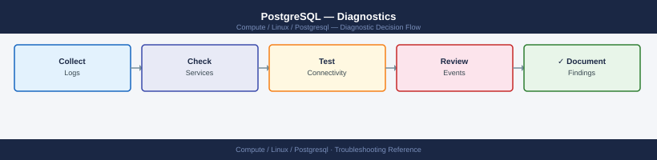

PostgreSQL — Diagnostics¶
PostgreSQL diagnostic commands: read the error log, query pg_stat_activity for blocking sessions, identify slow queries with pg_stat_statements, check WAL replication lag, diagnose autovacuum bloat, and collect a diagnostic snapshot for escalation.
*Applies to: PostgreSQL 14–17 on RHEL / Ubuntu LTS*

Before you begin¶
- Access:
postgressuperuser or a role withpg_monitorprivileges for diagnostic queries; root/sudo on the OS for log access - Gather first: the exact error message, affected database name, approximate time of the issue, and whether it affects one query, one user, or all connections
- Scope: confirm whether the issue is a single slow query, a blocked transaction, a replication lag event, or a service crash
- Extensions:
pg_stat_statementsmust be enabled inpostgresql.conf(shared_preload_libraries = 'pg_stat_statements') for slow query data — verify before relying on it
Step 1 — Check the error log¶
# Ubuntu (default log location)
sudo tail -100 /var/log/postgresql/postgresql-16-main.log
# RHEL (logs in data directory)
sudo tail -100 /var/lib/pgsql/16/data/log/postgresql-*.log
# systemd journal (works on both distros)
sudo journalctl -u postgresql-16 --since "1 hour ago" | tail -100
# Filter for errors only
sudo grep -E "FATAL|ERROR|PANIC" /var/log/postgresql/postgresql-16-main.log | tail -50
# Common error patterns:
# FATAL: max_connections exceeded — too many clients
# FATAL: password authentication failed — credential or pg_hba.conf issue
# PANIC: could not write to file — disk full or permissions
# LOG: autovacuum: found X pages with Y dead row versions — normal autovacuum
Expected output
2024-01-15 14:32:18.547 UTC [8234] LOG: database system was shut down at 2024-01-15 14:31:45 UTC
2024-01-15 14:32:18.612 UTC [8234] LOG: MultiXact member wraparound protections are now enabled
2024-01-15 14:32:18.621 UTC [8234] LOG: database system is ready to accept connections
2024-01-15 14:32:19.043 UTC [8241] LOG: autovacuum launcher started
2024-01-15 14:45:22.156 UTC [8567] ERROR: relation "users_table" does not exist at character 15
2024-01-15 14:45:22.156 UTC [8567] STATEMENT: SELECT * FROM users_table WHERE id = 42;
2024-01-15 15:02:11.834 UTC [8891] LOG: autovacuum: found 2847 pages with 15623 dead row versions in relation "public.transactions"
2024-01-15 15:02:12.102 UTC [8891] LOG: vacuuming "public.transactions" finished in 268.45 ms (pages: 0 removed, 2847 remain, 0 skipped due to pins, 0 skipped frozen)
2024-01-15 15:18:45.923 UTC [9102] FATAL: max_connections (100) exceeded
2024-01-15 15:18:45.923 UTC [9102] HINT: Try increasing the server's max_connections parameter.
Common errors
FATAL: max_connections (100) exceeded — Increase max_connections in postgresql.conf and reload the server with sudo systemctl reload postgresql-16.
ERROR: relation "users_table" does not exist — Verify the table name is correct and exists in the current schema with \dt in psql, or check if you need to specify the schema name explicitly.
FATAL: password authentication failed for user "postgres" — Verify credentials in pg_hba.conf are correct and the user exists; check with sudo -u postgres psql -c "\du" to list users.
Step 2 — Check active sessions and blocking¶
-- All non-idle sessions with duration
SELECT pid, usename, datname, state, wait_event_type, wait_event,
now() - query_start AS duration,
left(query, 120) AS query
FROM pg_stat_activity
WHERE state != 'idle'
ORDER BY duration DESC NULLS LAST;
-- Sessions in "idle in transaction" (holding locks without active query)
SELECT pid, usename, state, now() - state_change AS idle_duration,
left(query, 80) AS last_query
FROM pg_stat_activity
WHERE state = 'idle in transaction'
ORDER BY idle_duration DESC;
-- "idle in transaction" for > 30 seconds = common lock holder; consider terminating
Step 3 — Find and resolve lock contention¶
-- Who is blocking whom
SELECT blocked.pid AS blocked_pid,
blocked.usename AS blocked_user,
blocking.pid AS blocking_pid,
blocking.usename AS blocking_user,
left(blocked.query, 80) AS blocked_query,
left(blocking.query, 80) AS blocking_query,
now() - blocked.query_start AS blocked_duration
FROM pg_stat_activity blocked
JOIN pg_stat_activity blocking
ON blocking.pid = ANY(pg_blocking_pids(blocked.pid))
WHERE cardinality(pg_blocking_pids(blocked.pid)) > 0;
-- Identify the root blocker (chain of blocking)
SELECT pg_blocking_pids(<blocked_pid>);
-- Returns array of PIDs; recurse up the chain to find the root
-- Cancel the blocking query (sends SIGINT — graceful; waits for safe point)
SELECT pg_cancel_backend(<blocking_pid>);
-- Terminate the blocking connection (sends SIGTERM — forces disconnect)
SELECT pg_terminate_backend(<blocking_pid>);
-- Use terminate only if cancel does not resolve within 30 seconds
Step 4 — Identify slow queries¶
-- Top 10 queries by total execution time (requires pg_stat_statements)
SELECT left(query, 100) AS query,
calls,
total_exec_time / 1000 AS total_sec,
mean_exec_time / 1000 AS mean_sec,
rows
FROM pg_stat_statements
ORDER BY total_exec_time DESC
LIMIT 10;
-- Reset stats after a fix to measure improvement
SELECT pg_stat_statements_reset();
-- Get query plan for a slow query
EXPLAIN (ANALYZE, BUFFERS, FORMAT TEXT)
SELECT * FROM my_table WHERE some_column = 'value';
-- Look for: Seq Scan on large tables (should be Index Scan), high Rows Removed by Filter
-- High "Buffers: hit=X read=Y" with large Y = heavy I/O
-- Enable slow query log temporarily without restart
SET log_min_duration_statement = 1000; -- log queries > 1 second in current session
-- Or globally (requires reload, not restart):
-- ALTER SYSTEM SET log_min_duration_statement = 1000;
-- SELECT pg_reload_conf();
Step 5 — Check autovacuum and table bloat¶
-- Tables with the most dead tuples (candidates for bloat)
SELECT schemaname, relname, last_autovacuum, last_autoanalyze, n_dead_tup,
n_live_tup,
round(100.0 * n_dead_tup / NULLIF(n_live_tup + n_dead_tup, 0), 1) AS dead_pct
FROM pg_stat_user_tables
WHERE n_dead_tup > 10000
ORDER BY n_dead_tup DESC
LIMIT 20;
-- dead_pct > 20% = table needs VACUUM; autovacuum may not be keeping up
-- Force vacuum on a specific table (non-blocking VACUUM; FULL is disruptive)
VACUUM ANALYZE <schema>.<tablename>;
-- Check autovacuum activity in real time
SELECT datname, pid, backend_start, now() - backend_start AS runtime,
left(query, 100) AS query
FROM pg_stat_activity
WHERE query ILIKE '%autovacuum%'
ORDER BY backend_start;
Step 6 — Check WAL replication and lag¶
-- On the PRIMARY: check replica lag
SELECT client_addr,
state,
sent_lsn,
write_lsn,
flush_lsn,
replay_lsn,
(sent_lsn - replay_lsn) AS lag_bytes
FROM pg_stat_replication;
-- lag_bytes > 100 MB = replica is falling behind; investigate network or replica load
-- On the STANDBY: check lag in seconds
SELECT now() - pg_last_xact_replay_timestamp() AS replay_lag;
-- Expected: < 30 seconds for async streaming; 0 for synchronous replication
-- Confirm this host is a standby
SELECT pg_is_in_recovery() AS is_standby;
Step 7 — Collect diagnostic snapshot for escalation¶
# All-in-one diagnostic snapshot (run as postgres user or with psql -U postgres)
{
echo "=== PostgreSQL version ==="
psql -U postgres -c "SELECT version();"
echo "=== Active sessions ==="
psql -U postgres -c "SELECT pid, usename, state, now()-query_start AS dur, left(query,80) FROM pg_stat_activity WHERE state != 'idle' ORDER BY dur DESC NULLS LAST;"
echo "=== Blocking ==="
psql -U postgres -c "SELECT blocked.pid, blocking.pid AS blocker, left(blocked.query,60) FROM pg_stat_activity blocked JOIN pg_stat_activity blocking ON blocking.pid = ANY(pg_blocking_pids(blocked.pid)) WHERE cardinality(pg_blocking_pids(blocked.pid))>0;"
echo "=== Top slow queries ==="
psql -U postgres -c "SELECT calls, total_exec_time/1000 AS total_sec, left(query,80) FROM pg_stat_statements ORDER BY total_exec_time DESC LIMIT 10;"
echo "=== Replication ==="
psql -U postgres -c "SELECT client_addr, state, (sent_lsn-replay_lsn) AS lag_bytes FROM pg_stat_replication;"
echo "=== Dead tuple tables ==="
psql -U postgres -c "SELECT relname, n_dead_tup FROM pg_stat_user_tables ORDER BY n_dead_tup DESC LIMIT 10;"
echo "=== Error log (last 100 lines) ==="
sudo tail -100 /var/log/postgresql/postgresql-*.log 2>/dev/null || \
sudo tail -100 /var/lib/pgsql/*/data/log/postgresql-*.log
} > /tmp/pg-diag-$(date +%F-%H%M).txt
Expected output
=== PostgreSQL version ===
version
────────────────────────────────────────────────────────────────────────────────
PostgreSQL 14.8 (Debian 14.8-1.pgdg110+1) on x86_64-pc-linux-gnu, compiled by g
cc (Debian 11.2.0-19) 11.2.0, 64-bit
(1 row)
=== Active sessions ===
pid | usename | state | dur | left
───────┼──────────┼─────────┼──────────────┼──────────────────────────────────
28451 | appuser | active | 00:02:14.532 | SELECT * FROM orders WHERE status=
28462 | analytics| active | 00:01:47.291 | INSERT INTO audit_log (event_id,
28501 | postgres | active | 00:00:03.105 | SELECT pid, usename, state, now()
(3 rows)
=== Blocking ===
pid | blocker | left
──────┬─────────┼──────────────────────────────────────────────────────────
28451 | 28462 | UPDATE inventory SET qty=qty-1 WHERE sku='ABC123'
(1 row)
=== Top slow queries ===
calls | total_sec | left
───────┼───────────┼──────────────────────────────────────────────────────────
1247 | 847.3421 | SELECT o.id, o.total FROM orders o JOIN customers c ON
892 | 623.1847 | INSERT INTO transaction_log (user_id, action, timestamp)
156 | 412.5634 | SELECT COUNT(*) FROM large_fact_table WHERE date_part('ye
(3 rows)
=== Replication ===
client_addr | state | lag_bytes
──────────────┼───────────┼───────────
192.168.1.42 | streaming | 0
192.168.1.43 | streaming | 8192
(2 rows)
=== Dead tuple tables ===
relname | n_dead_tup
────────────────────┼────────────
transaction_log | 89342
audit_events | 45621
session_cache | 12847
(3 rows)
=== Error log (last 100 lines) ===
2024-01-15 14:23:47.123 UTC [28451] LOG: duration: 134.521 ms statement: SELECT * FROM orders WHERE status='pending'
2024-01-15 14:24:12.456 UTC [28462] WARNING: deadlock detected
2024-01-15 14:24:15.789 UTC [28501] LOG: autovacuum launcher started
Diagnostic snapshot saved to: /tmp/pg-diag-2024-01-15-1425.txt
Common errors
**`psql: error: connection to server on socket "/var/run/postgresql/.s.PGSQL.5432" failed: FATAL: Ident authentication failed for user
Log locations¶
| Source | Path / Command | What to look for |
|---|---|---|
| Error log (Ubuntu) | /var/log/postgresql/postgresql-16-main.log |
FATAL, PANIC, crash recovery |
| Error log (RHEL) | /var/lib/pgsql/16/data/log/postgresql-*.log |
Same |
| Slow query log | Configured via log_min_duration_statement |
Queries exceeding threshold |
| systemd journal | journalctl -u postgresql-16 --since "1h ago" |
Service start/stop events |
| pg_stat_activity | SQL view — live | Sessions, blocking, wait events |
| pg_stat_statements | SQL view — cumulative | Top queries by total execution time |
See also¶
Verify resolution¶
pg_stat_activityshows no sessions inidle in transactionfor more than 30 secondspg_stat_replicationshows lag_bytes below 100 MB (or 0 for sync replication)- The original slow query now runs within expected time;
EXPLAIN ANALYZEshows Index Scan instead of Seq Scan n_dead_tupinpg_stat_user_tablesis decreasing afterVACUUM ANALYZE- No new FATAL or PANIC entries in the error log in the last 15 minutes